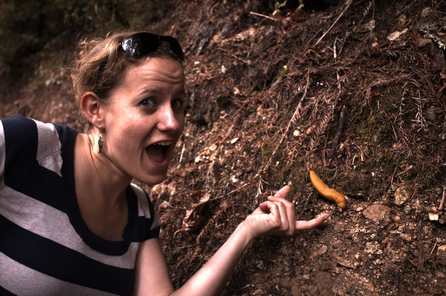

① Linearizedblack-level subtracted · [0,1]
② Bayer ID — RGGBquarter-resolution candidate
③a White Balance — Gray Worldmean(G) / mean(channel)
③b White Balance — White Worldmax(G) / max(channel)

④ Demosaicedbilinear interp per channel
⑤ Final sRGBbrightness × 4 · gamma IEC 61966-2-1